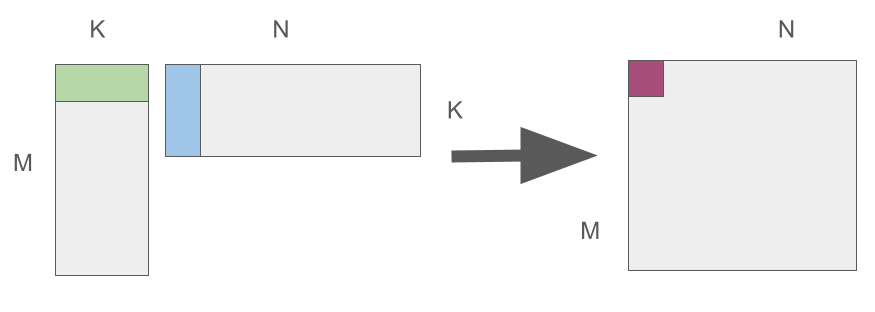
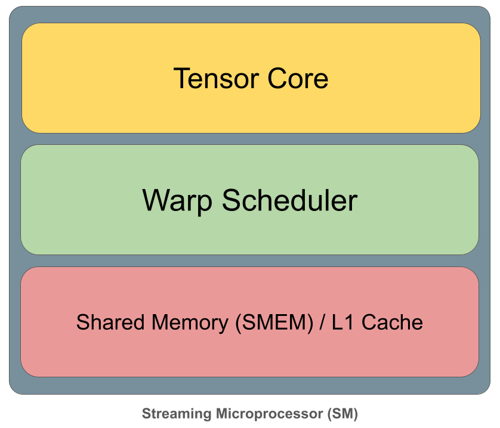
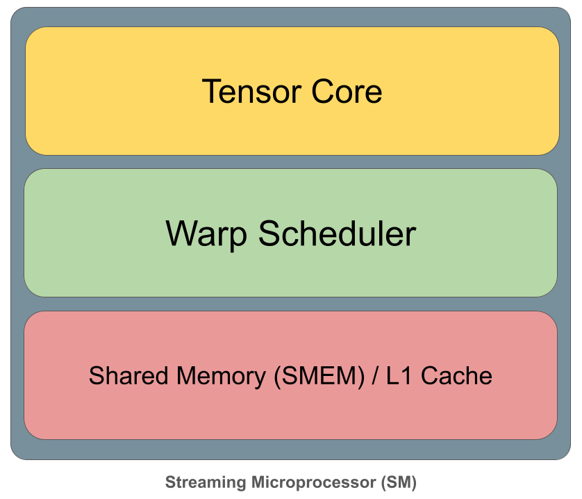

How to Write a Matrix Multiplication Kernel using Pallas¶
Matrix multiplication is the core operation that lies at the heart of modern machine learning. Libraries like cuBLAS are used under the hood by most deep learning frameworks such as Jax and Torch. These are highly optimized and tuned for NVIDIA GPUs. Programs (called kernels) are written in a language called CUDA, which extends C/C++. CUDA is designed for the SIMD (Single Instruction Multiple Data) paradigm, which works very well for massively parallel operations like matrix multiplication.
Most ML researchers and practitioners do not write GPU kernels, instead relying on the existing CUDA implementations for primitive operations. This works well most of the time. However, it’s often useful to write kernels for new or experimental operations or to combine multiple operations into a single kernel to improve efficiency.
Frameworks such as Pallas and Triton allow us to write GPU Kernels in a high level language like Python while exposing enough of the low-level details like tiling, memory layout, parallelism and data movement. Pallas composes cleanly with high level Jax, which is a big advantage for programmers who can now write custom kernels within the Jax paradigm.
Matrix Multiplication¶
Given matrices \(A \in \mathbb{R}^{M \times K}\) and \(B \in \mathbb{R}^{K \times N}\), each element of the output matrix \(C \in \mathbb{R}^{M \times N}\) is just a dot product:
You can easily implement this using three nested loops. However, this is highly inefficient on a CPU. On a GPU, this can be parallelized to a large extent because of special processors called Tensor cores, which can calculate small chunks of the matrix as ‘atomic’ operations, and run several of these in parallel.

So any good GPU programmer must think primarily in terms of tiles / blocks of computation.
Now, matrices can get quite large. However, each GPU processor has limited memory. A big chunk of wall time is therefore spent in loading blocks of the matrix into caches that are located close to the GPU. It’s therefore useful to think of a GPU as a block processing pipeline - several blocks are loaded onto the processors in parallel, processed, then written out. To make this more concrete, let’s first learn some basics about the GPU hardware architecture.
GPU Architecture¶
Component Layout¶
Let’s build a simplified mental model of the NVIDIA GPU architecture. This will help us make good decisions when we write our matmul kernel.
 

At the top level, the GPU consists of many Streaming Multiprocessors (SMs) that run in parallel. Each SM executes blocks of threads (warps) independently, while sharing access to a large L2 cache and off-chip high-bandwidth global memory (HBM/GMEM). Inside each SM, computation is orchestrated by warp schedulers and carried out on execution units such as tensor cores for dense matrix operations. Data needed for fast reuse is staged in shared memory (SMEM), which is tightly coupled with the L1 cache and sits much closer to compute than L2 or global memory. High performance comes from structuring computation so that data flows down this hierarchy once, is reused heavily inside the SM, and continuously feeds the tensor cores without stalls.
Memory Hierarchy¶

This brings us to the memory hierarchy, which is essential to understand the tradeoffs between the different memory components. The details in the diagram above are specific to the NVIDIA H-100 chipset, however, the tradeoffs are the same for any modern GPU - slow and high capacity memory at the bottom, fastest and low capacity memory on top.
At the top are registers (RMEM), which are private to each SM, extremely small, and effectively single-cycle, providing the highest bandwidth but the least capacity. Below that is shared memory / L1 cache, still per-SM and SRAM-backed, offering fast access and explicit data reuse for kernels. The next level, distributed shared memory (DSMEM), is shared across a cluster of SMs and enables limited cross-SM data sharing at higher latency. Beneath that sits the global L2 cache, shared by the entire GPU, providing much larger capacity but noticeably higher latency. At the base is device memory (HBM/VRAM), which offers massive capacity and high aggregate bandwidth, but with the highest access latency. The pyramid visually captures the central performance principle of GPU programming: the closer data is to the compute units, the faster it is, and high-performance kernels work by aggressively moving data up this hierarchy and reusing it before it falls back to lower levels.
Pipelining¶
Matrix multiplication performance is dominated by where data lives at each moment of the computation. A matmul kernel repeatedly uses the same tiles of A and B to update many output values. Staging those tiles in registers or shared memory is critical: data fetched from HBM or even L2 is far too slow to feed the compute units efficiently. Each design choice in a high-performance matmul kernel – tile sizes, number of stages, warp assignments – is ultimately about keeping operands as high in this hierarchy as possible, for as long as possible, so that tensor cores are never starved for data.
The key to writing efficient kernels is pipelining. A well designed kernel uses this technique to overlap asynchronous operations like memory transfers and computation so that they are executed in parallel.

For more details about software pipelineing, check out the Pallas documentation[3].
Designing a Matrix Multiplication Kernel¶
First, we can store A and B in HBM / GMEM and allocate memory in HBM for our output C. Then we can load small chunks of A and B into the register, multiply them, and write each finished chunk back out to C in the correct location. Here’s a rough sketch of the algorithm:
Pick a tile size by timing a few candidate configurations on the current input shapes, then keep the fastest one.
Launch a tiled matmul kernel using that chosen configuration.
For each output tile (a block of rows and columns in C), create a local accumulator initialized to zero.
Walk through K in chunks (BK): load one A tile and one B tile for the current K chunk.
Multiply the two tiles and add the result into the accumulator.
After all K chunks are processed, write the accumulator into the corresponding output tile in C.
Here is an implementation in Pallas:
BLOCK_M = 128
BLOCK_N = 128
BLOCK_K = 32
NUM_WARPS = 8
NUM_STAGES = 3
Here, I have chosen a good configuration for an NVIDIA RTX 5000.
Next, let’s write the kernel. In addition to Pallas our implementation also uses the Triton bindings for Pallas for executing memory transfers.
import functools
import jax
import jax.numpy as jnp
from jax.experimental import pallas as pl
from jax.experimental.pallas import triton as plgpu
def _matmul_kernel(a_ref, b_ref, c_ref, *, K: int, num_k_tiles: int):
acc = jnp.zeros((BLOCK_M, BLOCK_N), dtype=jnp.float32)
def body(t, acc):
k_idx = pl.dslice(t * BLOCK_K, BLOCK_K)
a_tile = plgpu.load(a_ref.at[:, k_idx])
b_tile = plgpu.load(b_ref.at[k_idx, :])
return acc + pl.dot(a_tile, b_tile).astype(jnp.float32)
acc = jax.lax.fori_loop(0, num_k_tiles, body, acc)
plgpu.store(c_ref, acc.astype(c_ref.dtype))
@jax.jit
def matmul(a: jax.Array, b: jax.Array) -> jax.Array:
M, K = a.shape
K2, N = b.shape
assert K == K2
assert M % BLOCK_M == 0 and N % BLOCK_N == 0 and K % BLOCK_K == 0
grid = (pl.cdiv(M, BLOCK_M), pl.cdiv(N, BLOCK_N))
num_k_tiles = pl.cdiv(K, BLOCK_K)
out_shape = jax.ShapeDtypeStruct((M, N), a.dtype)
return pl.pallas_call(
functools.partial(_matmul_kernel, K=K, num_k_tiles=num_k_tiles),
out_shape=out_shape,
grid=grid,
in_specs=[
pl.BlockSpec((BLOCK_M, K), lambda i, j: (i, 0)), # A
pl.BlockSpec((K, BLOCK_N), lambda i, j: (0, j)), # B
],
out_specs=pl.BlockSpec((BLOCK_M, BLOCK_N), lambda i, j: (i, j)), # C
interpret=False,
compiler_params=plgpu.CompilerParams(
num_warps=NUM_WARPS,
num_stages=NUM_STAGES,
),
)(a, b)
So how well does this work? Let’s compare our implementation with the out-of-the-box one.
import time
def _bench(fn, *args, iters=100):
times = []
for _ in range(iters):
t0 = time.perf_counter()
out = fn(*args)
out.block_until_ready()
t1 = time.perf_counter()
times.append(t1 - t0)
return sum(times) / len(times)
key = jax.random.key(0)
M = N = K = 1024
a = jax.random.normal(key, (M, K), dtype=jnp.bfloat16)
b = jax.random.normal(key, (K, N), dtype=jnp.bfloat16)
jax_mm_jit = jax.jit(lambda x, y: x @ y) # out of the box implementation
#warmup
_ = matmul(a, b).block_until_ready()
_ = jax_mm_jit(a, b).block_until_ready()
t_pallas = _bench(matmul, a, b)
t_jax = _bench(jax_mm_jit, a, b)
print(f"Pallas matmul: {t_pallas*1e3:.2f} ms")
print(f"JAX matmul: {t_jax*1e3:.2f} ms")
print(f"Speedup (baseline / pallas): {t_jax / t_pallas:.2f}x")
W0102 13:41:34.586199 4376 cuda_executor.cc:1802] GPU interconnect information not available: INTERNAL: NVML doesn't support extracting fabric info or NVLink is not used by the device.
W0102 13:41:34.588776 4072 cuda_executor.cc:1802] GPU interconnect information not available: INTERNAL: NVML doesn't support extracting fabric info or NVLink is not used by the device.
Pallas matmul: 0.11 ms
JAX matmul: 0.12 ms
Speedup (baseline / pallas): 1.08x
It performs comparably with the out-of-the-box implementation, which is encouraging, considering that the NVIDIA supplied kernels are highly tuned. Needless to say, it becomes difficult to do better for kernels that are more involved than a simple matrix multiplication.
In the next iteration, we’ll use profiling tools to understand the performance of our implementation and find out if the pipelining works as per our theory.
References¶
CUDO Compute. (n.d.). A beginner’s guide to NVIDIA GPUs. CUDO Compute Blog. https://www.cudocompute.com/blog/a-beginners-guide-to-nvidia-gpus
Gordić, A. (n.d.). Matrix multiplication (matmul) explained. Aleksa Gordić Blog. https://www.aleksagordic.com/blog/matmul
JAX Contributors. (n.d.). Software Pipelining — Pallas. JAX Documentation. https://docs.jax.dev/en/latest/pallas/pipelining.html